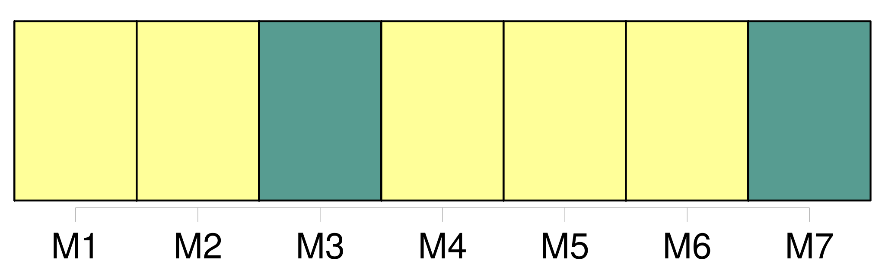
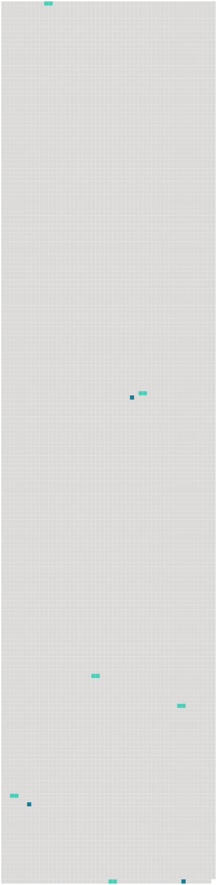

Longueur nb maillons : 9 mentions |
 |
— Mon bonheur à rester seule assise au bord de [la mer] , à errer pendant des heures sur la plage, chantant, ramassant des coquillages. [205 phrases]
» [2 phrases]
C'est en [mer] , à la date du 14 novembre qu'Élisabeth écrivit le solennel engagement qui suit : [123 phrases] Les mugissements de [la mer] semblables au tonnerre. [19 phrases] Une tempête violente, qui fait jaillir l'écume de [la mer] jusqu'à notre fenêtre, ajoute encore à sa mélancolie. [38 phrases] Ce matin je me suis réveillée comme la lune brillait encore juste en face de la fenêtre ; mais je n'ai pas joui de sa clarté, l'écume de [la mer] rend les carreaux toujours obscurs. [4 phrases] Encore la tempête en [mer] , et le vent qui souffle, et un froid si vif!! [40 phrases] [La mer] , que j'avais vue jusqu'alors si violente, semblait caresser les rochers qu' [elle] avait battus tant de fois. |
 |
Il est possible de télécharger la ressource sur la page Ortolang |
Si vous avez des questions ou vous voyez des erreurs, merci d'envoyer un mail à silvia.federzoni89@gmail.com |